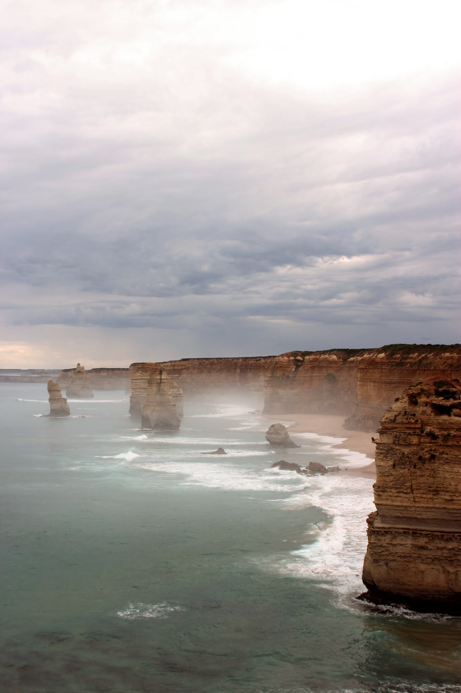
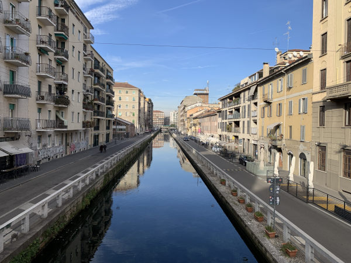
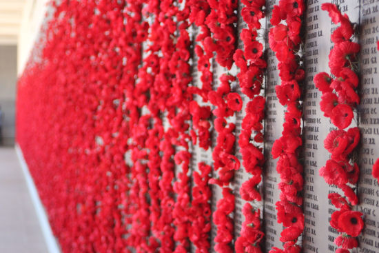
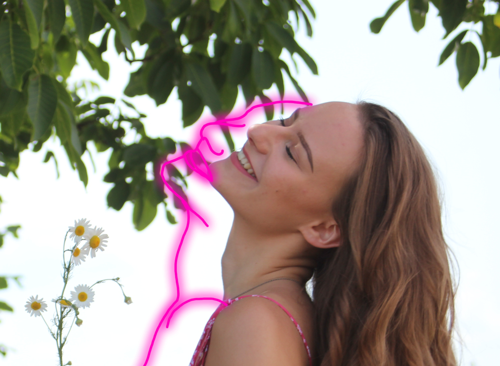

Meine Bilder
Auf Reisen habe ich schon viele Orte gesehen und auch fotografiert.
Hier habe ich Ihnen eine kleine Auswahl zusammengestellt.
Uluru im Red Centre, Australien:

Die 12 Apostles im Süden Australiens:
Die Kanäle Mailands:
Das Australian War Memorial:
Entstanden im Sommer 2020:
Meine Videos
Für den Kurs "AV-Produktion" war eine Übung das Filmen und schneiden einer 5-Shot-Coverage.
Das folgende Video ist mein Endprodukt:
Angefangene 'Buchprojekte'
In my mind:
Ich habe mehrere Kapitel einer Geschichte verfasst, die mir nicht mehr aus dem Kopf ging.
Im ersten Kapitel wird die Protagonistin vor
Herausforderungen gestellt, die weitreichende Folgen nach sich ziehen werden.
Lesen Sie hier das erste Kapitel von In my mind:
In my mindSchon früh war das Schreiben eine Art Ventil für meine Gefühle und die Situationen in denen ich mich befand.
Die Gefühle, und meine Situationen, für welche ich mich damals schämte habe ich keinem außer dem leeren Notizbuch anvertraut.
Zum Schluss habe ich mich auch für die daraus entstandenen Geschichten geschämt. Und das Schreiben für eine lange Zeit aufgegeben.
Erst als ich die liebe zum lesen fand, habe ich auch wieder angefangen leere Seiten zu füllen. Oft ohne jedlichen Plan dahinter.
Zum Spaß.